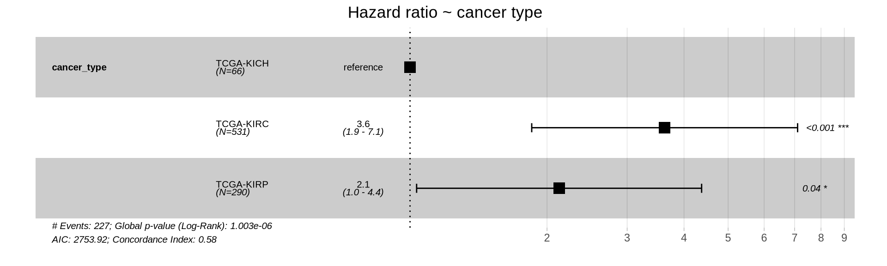
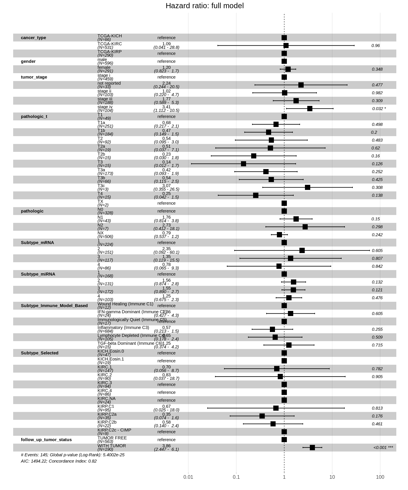
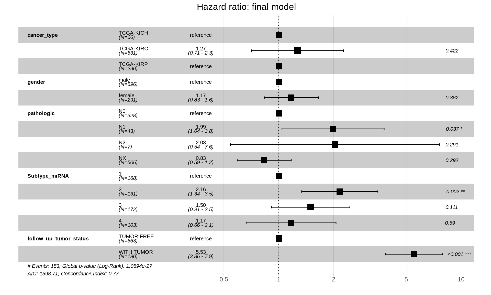
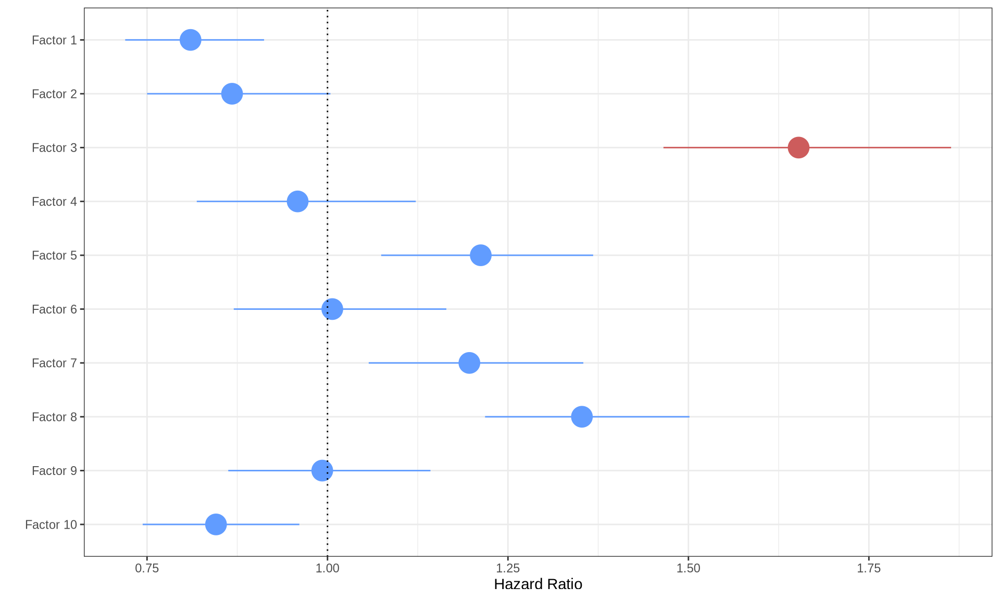

7 Survival Analysis
7.1 On this page
Biological insights and take-home messages are at the bottom of the page at section Lesson Learnt: Section 7.4.
- Here we investigate the clinical outcome reported for the kidney carcinoma patients, by performing a survival analysis with the Kaplan-Meier estimator as well as modeling the Cox hazard-model estimation.
- We will perform the survival analyses based on both the Overal Survival (OS) data, as well as the progression-free interval (PFI).
- We will compare the clinical outcome based on the reported kidney carcinoma type, and we will also group the patients based on their multi-omics profiles, as modeled with the multi-omics factor analysis (see Chapter 6).
- Finally, we answer the hypothesis we raised in Data Exploration - Kidney Cancer chapter (see Chapter 1): is KIRC associated with worse outcome when compared to KICH and KIRC.
7.2 Survival Analysis: Overall Survival
TCGA provides the following time periods for the patients with the three kidney carcinomas:
- Overall Survival (OS): the period of time that patients in a study have survived since diagnosis or treatment.
- Disease-Specific Survival (DSS): the period between the time of diagnosis the time of death caused by cancer. Patients who died from other causes are not included in this measurement.
- Disease-Free Interval (DFI): the period of time after primary treatment that the patient survives without any signs or symptoms of cancer.
- Progression-Free Interval (PFI): the period that the patient lives with cancer but it does not get worse.
Let’s start analyzing the Overall Survival data. First, we start with the observational metadata only, before stratifying the patients based on the molecular signatures we have generated with the multi-omics factor analysis (see Chapter 6). In both cases, we model the Kaplan-Meier estimator and the Cox hazard regression model.
7.2.1 Metadata only
Let’s model the observational metadata on the clinical outcome reported by TCGA.
7.2.1.1 Kaplan-Meier Estimator
The Kaplan-Meier estimator is commonly used to analyze time-to-event data, such as the time until death occurs. For this, the Kaplan-Meier curve graphically represent the survival rate or survival function. Time is plotted on the x-axis and the survival rate is plotted on the y-axis.
We calculated the Kaplan-Meier curve as a function of the Overall Survival time versus the vital status of the patient (Alive or Dead) in function of the kidney carcinoma type. We can already observe some differences in the Kaplan-Meier curves for the three kidney carcinoma types, with KIRC patients having a lower curve (higher mortality), KICH patients having a higher curve (lower mortality) and KIRP patients sitting in between KIRC and KICH curves. This is consistent with what we have observed in the exploration of the datasets looking for significant difference of each observed clinical covariate (see Chapter 1).
While plotting the curves can help provide a visual representation of the differences between the three time-to-event group of data, we should run a log rank test to measure the statistical difference between the curves. The results are summarized in the table below. We observed a statistical difference between the Overall Survival time of the three kidney carcinomas (n = 885, Chisq = 23.9 on 2 degree of freedom, p-value = 6e-06), confirming the hypothesis that KIRC patients have a significantly worse clinical outcome than KIRP patients or KICH patients.
7.2.1.2 Cox hazard model
In addition to the Kaplan-Meier estimate, the Cox proportional hazards regression is one of the most popular regression techniques for survival analysis. In a Cox proportional hazards regression model, the measure of effect is the hazard rate (HR), which is the risk of failure (here: risk of death), given that the participant has survived up to a specific time. We compare independent groups with in function of their hazards, and we use a hazard ratio, which is analogous to an odds ratio in the setting of multiple logistic regression analysis. The hazard represents the expected number of events per one unit of time.
- If the hazard ratio for a predictor is close to 1 then that predictor does not affect survival,
- if the HR is less than 1, then the predictor is protective (i.e., associated with improved survival),
- and if the HR is greater than 1, then the predictor is associated with increased risk (or decreased survival).
The forest plot of the Cox Hazard Rations confirm that KIRC and KIRP patients have significantly higher risk of worse outcome than KICH patients.

The Cox model we have generated is among the simpler we could have generated, and does not take into account several clinical covariates that are available for the kidney carcinoma patients that may correlate with each other and contribute the the Hazard Ratios.
Based on the initial exploration of the clinical covariates (see Chapter 1) and their correlation with the multi-omics signatures we have generated (see Chapter 6), we include the following clinical covariates in our model:
- gender
- Tumor stage, tumor_stage
- TMN main tumor pathology, pathologic_t
- TMN lymph nodes metastatis, pathologic
- Molecular subtypes based on miRNA, Subtype_miRNA
- Molecular subtypes based on transcriptomics, Subtype_mRNA
- Subtype based on immune response, Subtype_Immune_Model_Based
- Selected cancer subtype, Subtype_Selected
- Residual disease, follow_up_tumor_status
Despite their association with the mlti-omics signature we have identified, we could not include in the global Cox Hazard model race, tumor histological grade (histological_grade), molecular subtypes based on proteomics (Subtype_protein), molecular subtypes based on epigenomics (Subtype_DNAmeth) or subtype_integrative because they would completely overlap with one or more of the kidney carcinoma subtypes and would generate infinite coefficients, preventing the modeling.

When including all clinical covariates in the model, we see a different picture on the Hazard Ratios than on the simple model based on kidney carcinoma types only. Under this more comprehensive model, KIRC patients don’t have a higher risk when compared to KICH or KIRP patients. Significant higher risk is associated with more advanced tumor stages (stage iv, HR between 1.112 and 10.5 with a p-value = 0.032) and presence of residual disease (WITH TUMOR, HR between 2.447 and 6.1, with a p-value < 0.001).
With such an inclusive model, we should test if the assumption of the Cox regression model still holds true: the groups should be independent with respect to their hazards. Let’s test the proportional hazard assumption.
The test indicates that tumor_stage, TMN main tumor pathology (pathologic_t), Molecular subtypes based on transcriptomics (Subtype_mRNA), Subtype based on immune response (Subtype_Immune_Model_Based) and Selected cancer subtype (Subtype_Selected) violates the proportional hazards assumption of independence. We can further characterize the association by displaying the scaled Schoenfeld residuals.

The model results indicate there is a significant positive association between tumor stage and all-cause mortality, and a statistically non-significant positive association with Subtype_mRNA and a statistically non-significant overall negative association with Subtype_Immune_Model_Based and Subtype_Selected and the all-cause mortality.
The full model provides us with fundamental insights to drop clinical covariates that vilates the proportional hazard assumption and allows us to compute the final Cox proportional Hazard Ratios.

Let’s test that the proportional hazards assumptions are respected.
The final model is in contrast with initial, more naive, simple model of Overall Survival in function of the cancer type, and suggests that there is no significantly higher hazard associated with KIRC when compared to KICH or KIRP. Presence of metastases on lymphnodes (pathologic) have significantly higher risk: for N1, 1.04 to 3.8 HR with a p-value of 0.037, N2 is not significant (p-value = 0.291) possibly due to its lower counts (N=7). Subtype microRNA 2 is also associated with higher risk (HR between 1.34 and 3.5, p-value = 0.002), and of course, residual disease is strongly associated with higher risk of worse clinical outcome (HR between 3.86 and 7.9, p-value < 0.001).
7.2.2 Multi-omics predictive model for clinical outcome
The factors inferred with the multi-omics factor analysis (see Chapter 6) can be related to the clinical outcomes. If a factor has a influence on the surivival time it will receive a high absolute coefficient in the Cox model. In particular:
- If the coefficient is positive, samples with large factor values have an increased hazard compared to samples with small factor values.
- If the coefficient is negative, samples with small factor values have an increased hazard compared to samples with a large factor values.
Now, we are going to test the correlation between the factors we have molecularly characterized (i.e.: Factor 1 and Factor 2) with the Overall Survival of the kidney carcinomas patients. We can test if the biopsies clustered based on the multi-omics signatures can provide a better predictive model of clinical outcome than the one based solely on the provided metadata.
When fitting the Cox hazard model and testing the significance with a log rank test we obtain a significant results (Likelihood ratio test = 171.1 on 10 degrees of freedom, p-value =< 2.2e-16), indicating that there is a significant association between the multi-omics factors and and increased or a decreased risk.
Six of the ten factors are significantly associated with a higher or lower proportional hazard, however, the increase or decrease in Hazard Ratio is very small:
- Factor 1 is significantly (p-value = 0.0005) associated with a lower hazard. The positive weights of Factor 1 correlated with KICH and KIRP, while the negative weights correlated with KIRC, suggesting that KIRC biopises with the multi-omics signature of Factor 1 have significantly higher risk. The reduced Hazard Ratio in KICH and KIRP, however, is very small (HR: 0.81).
- Factor 2 is not significantly associated with a higher or lower hazard (p-value > 0.05).
- Factor 3 is significantly associated with higher hazard (p-value < 2.66E-16). Positive weights in Factor 3 were associated with the tumor severity and the covariates pathologic tumor grading, subtype selected, tumor cells, tumor nuclei, tumor stage, tumor status and vital status. The Hazard Ratio is also large (HR: 1.65), suggesting that Factor 3 multi-omics signature can describe patients with higher risk and possible worse clinical outcome.
Visualizing the Cox proportional Hazard Ratio model results on a forest plot help better visualizing the higher Hazard Ratio associated with Factor 3.

Also the Kaplan-Meier survival curves propely visualize the difference in survival times between Factor 1 or Factor 2 multi-omics signatures (discriminating between KIRC vs. KICH and KIRP, and KICH vs. KIRC and KIRP, respectively) and Factor 3 multi-omics signature (correlating with more advanced tumor, residual disease and worse clinical outcome).
7.3 Survival Analysis: Progression-Free Interval (PFI)
While Overall Survival provides a good overview of the clinical outcome, it does not take into account that in the meanwhile patients may die due to causes unrelated to cancer. Therefore, we have decide to perform a similar survival analysis based on the Progression-Free Interval (PFI) time data available at TCGA for the kidney carcinoma patients. As we have done for the Overall Survival, we start with the observational metadata only, before stratifying the patients based on the molecular signatures we have generated with the multi-omics factor analysis. In both cases, we model the Kaplan-Meier estimator and the Cox hazard regression model.
7.3.1 Metadata only
Let’s model the observational metadata on the clinical outcome reported by TCGA.
7.3.1.1 Kaplan-Meier Estimator
The Kaplan-Meier curves obtained in function of the Progression-Free Interval are very similar to the ones obtained with the Overall Survival data, with the only noticeable difference being a slightly lower curve for KICH and KIRP cancers within the first 500 days after diagnosis.

While plotting the curves can help provide a visual representation of the differences between the three time-to-event group of data, we should run a log rank test to measure the statistical difference between the curves. The results are summarized in the table below. We observed a statistical difference between the Progression-Free Interval of the three kidney carcinomas (n = 885, Chisq = 23.9 on 2 degree of freedom, p-value = 6e-06), similarly to what observed with the Overall Survival data.
7.3.1.2 Cox regression model
Let’s now model the Cox proportional hazards regression on the Progression-Free Interval data.
The forest plot of the Cox Hazard Rations on patients Progression-Free Interval indicates that KIRC patients have a significantly higher risk of worse outcome than KICH or KIRP patients. This is in contrast with the simple Cox regression model on Overall Surviaval, where also KIRP patients had a significant higher risk than KICH patients.
Let’s now evaluate the full model by adding the clinical covariates: gender, tumor_stage, pathologic_t, pathologic, Subtype_miRNA, Subtype_mRNA, Subtype_Immune_Model_Based, Subtype_Selected, follow_up_tumor_status.

Similarly to what observed for the Overall Survival data, when including all clinical covariates in the model, we see a different picture on the Hazard Ratios than on the simple model based on kidney carcinoma types only. Under this more comprehensive model, KIRC patients don’t have a significantly higher risk when compared to KICH or KIRP patients. Significant higher risk is associated with more advanced tumor stages (stage iv, HR between 1.109 and 9.80 with a p-value = 0.032), the subtype microRNA 2 (HR between 1.108 and 3.72, p-value = 0.022) and presence of residual disease (WITH TUMOR, HR between 3.773 and 9.71, with a p-value < 0.001). Lower risk is instead significantly associated with the inflammatory immune subtype (immune C3) and the Lymphocyte Depleted (immune C4) subtype, with reduced HR between 0.0075 and 0.63 and 0.053 and 0.75, respectively.
As for theOverall Survival data, we should test if the assumption of the Cox regression model still holds true: the groups should be independent with respect to their hazards. Let’s test the proportional hazard assumption.
The test indicates that tumor_stage, TMN main tumor pathology (pathologic_t), Molecular subtypes based on transcriptomics (Subtype_mRNA), Subtype based on immune response (Subtype_Immune_Model_Based) and Selected cancer subtype (Subtype_Selected) violates the proportional hazards assumption of independence. We can further characterize the association by displaying the scaled Schoenfeld residuals.

The model results indicate there is a significant positive association between tumor stage and all-cause mortality, and a statistically non-significant positive association with Subtype_mRNA and a statistically non-significant overall negative association with Subtype_Immune_Model_Based and Subtype_Selected and the all-cause mortality.
The full model provides us with fundamental insights to drop clinical covariates that vilates the proportional hazard assumption and allows us to compute the final Cox proportional Hazard Ratios.
Let’s confirm that the proportional hazards assumptions are respected.
The final model is in contrast with initial, more naive, simple model of Progression-Free Interval in function of the cancer type, and suggests that there is no significantly higher hazard associated with KIRC when compared to KICH or KIRP. Presence of metastases on lymphnodes (pathologic) have significantly higher risk: N1 is not significant (p-value = 0.056), N2 is significant, 1.01 to 14.4 HR with a (p-value = 0.048). Subtype microRNA 2 and 3 are also associated with higher risk, and of course, residual disease is strongly associated with higher risk of worse clinical outcome (HR between 6.04 and 12.8, p-value < 0.001).
7.3.2 Multi-omics predictive model for clinical outcome
Now, we are going to test the correlation between the factors we have molecularly characterized (i.e.: Factor 1 and Factor 2) with the Progression-Free Interval of the kidney carcinomas patients. We can test if the biopsies clustered based on the multi-omics signatures can provide a better predictive model of clinical outcome than the one based solely on the provided metadata.
When fitting the Cox hazard model and testing the significance with a log rank test we obtain a significant results (Likelihood ratio test = 171.1 on 10 degrees of freedom, p-value =< 2.2e-16), indicating that there is a significant association between the multi-omics factors and and increased or a decreased risk.
Visualizing the Cox proportional Hazard Ratio model results on a forest plot help better visualizing the higher Hazard Ratio associated with Factor 3.
Also the Kaplan-Meier survival curves propely visualize the difference in survival times between Factor 1 or Factor 2 multi-omics signatures (discriminating between KIRC vs. KICH and KIRP, and KICH vs. KIRC and KIRP, respectively) and Factor 3 multi-omics signature (correlating with more advanced tumor, residual disease and worse clinical outcome).
7.4 Lessons Learnt
The survival analysis finally provided us with enough evidence to answer the hypothesis we have formulated upon a first inspection of the clinical data (see Chapter 1): is KIRC associated with worse prognosis? Based on the clinical and the multi-omics data, we have learnt:
- KIRC patients seem to have a poorer prognosis when compared to KICH or KIRP patients based on both Overall Survival and Progression-Free Interval if we model the survival analyses purely on the kidney carcinoma type (i.e.: KICH, KIRC or KIRP).
- When including additional clinical covariates, it emerges a different picture: KIRC is not associated with worse clinical outcome, but residual disease and presence of metastasis on lymph nodes (TMN lymph nodes metastatis) are.
- The multi-omics signatures we have identified with the factor analysis (see Chapter 6) confirmed that there is little higher risk associated with Factor 1 signature (discriminating KIRC from KICH and KIRP) and Factor 2 (discriminating KICH from KIRC and KIRP). However, Factor 3 is strongly associated with a higher Hazard Ratio (HR: 1.65) and with a poorer prognosis based on the Kaplan-Meier estimate. Factor 3 is associated with the tumor severity and the covariates pathologic tumor grading, subtype selected, tumor cells, tumor nuclei, tumor stage, tumor status and vital status.
- The results of the survival analysis are consistent for both the Overall Survival and the Progression-Free Interval times.
7.5 Session Information
Note
R version 4.3.2 (2023-10-31)
Platform: x86_64-conda-linux-gnu (64-bit)
Running under: openSUSE Tumbleweed
Matrix products: default
BLAS/LAPACK: /home/andrea/miniforge3/envs/moai/lib/libmkl_rt.so.2; LAPACK version 3.9.0
locale:
[1] LC_CTYPE=en_US.UTF-8 LC_NUMERIC=C
[3] LC_TIME=it_IT.UTF-8 LC_COLLATE=en_US.UTF-8
[5] LC_MONETARY=en_US.UTF-8 LC_MESSAGES=en_US.UTF-8
[7] LC_PAPER=en_US.UTF-8 LC_NAME=C
[9] LC_ADDRESS=C LC_TELEPHONE=C
[11] LC_MEASUREMENT=en_US.UTF-8 LC_IDENTIFICATION=C
time zone: Europe/Brussels
tzcode source: system (glibc)
attached base packages:
[1] parallel grid stats4 stats graphics grDevices utils
[8] datasets methods base
other attached packages:
[1] UpSetR_1.4.0
[2] tidygraph_1.3.1
[3] umap_0.2.10.0
[4] survminer_0.5.0
[5] ggpubr_0.6.0
[6] survival_3.8-3
[7] stringr_1.5.1
[8] STRINGdb_2.14.3
[9] scales_1.3.0
[10] RColorBrewer_1.1-3
[11] pathview_1.42.0
[12] org.Hs.eg.db_3.18.0
[13] MOFA2_1.12.1
[14] IlluminaHumanMethylation450kanno.ilmn12.hg19_0.6.1
[15] minfi_1.48.0
[16] bumphunter_1.44.0
[17] locfit_1.5-9.10
[18] iterators_1.0.14
[19] foreach_1.5.2
[20] Biostrings_2.70.3
[21] XVector_0.42.0
[22] igraph_2.1.4
[23] gridExtra_2.3
[24] ggfortify_0.4.17
[25] ggraph_2.2.1
[26] ggplot2_3.5.1
[27] forcats_1.0.0
[28] edgeR_4.0.16
[29] limma_3.58.1
[30] DT_0.33
[31] dplyr_1.1.4
[32] DOSE_3.28.2
[33] DESeq2_1.42.1
[34] SummarizedExperiment_1.32.0
[35] MatrixGenerics_1.14.0
[36] matrixStats_1.5.0
[37] GenomicRanges_1.54.1
[38] GenomeInfoDb_1.38.8
[39] data.table_1.16.4
[40] cowplot_1.1.3
[41] clusterProfiler_4.10.1
[42] BiocSingular_1.18.0
[43] BiocParallel_1.36.0
[44] AnnotationDbi_1.64.1
[45] IRanges_2.36.0
[46] S4Vectors_0.40.2
[47] Biobase_2.62.0
[48] BiocGenerics_0.48.1
loaded via a namespace (and not attached):
[1] progress_1.2.3 HDF5Array_1.30.1
[3] vctrs_0.6.5 RApiSerialize_0.1.4
[5] digest_0.6.37 png_0.1-8
[7] ggrepel_0.9.6 corrplot_0.95
[9] MASS_7.3-60.0.1 reshape_0.8.9
[11] reshape2_1.4.4 qvalue_2.34.0
[13] withr_3.0.2 xfun_0.50
[15] ggfun_0.1.8 doRNG_1.8.6.1
[17] memoise_2.0.1 commonmark_1.9.2
[19] gson_0.1.0 tidytree_0.4.6
[21] zoo_1.8-12 gtools_3.9.5
[23] KEGGgraph_1.62.0 maxstat_0.7-25
[25] Formula_1.2-5 prettyunits_1.2.0
[27] KEGGREST_1.42.0 httr_1.4.7
[29] rstatix_0.7.2 restfulr_0.0.15
[31] hash_2.2.6.3 rhdf5filters_1.14.1
[33] stringfish_0.16.0 rhdf5_2.46.1
[35] generics_0.1.3 dir.expiry_1.10.0
[37] curl_6.2.0 zlibbioc_1.48.2
[39] ScaledMatrix_1.10.0 polyclip_1.10-7
[41] GenomeInfoDbData_1.2.11 quadprog_1.5-8
[43] SparseArray_1.2.4 xtable_1.8-4
[45] evaluate_1.0.3 S4Arrays_1.2.1
[47] BiocFileCache_2.10.2 preprocessCore_1.64.0
[49] hms_1.1.3 irlba_2.3.5.1
[51] qs_0.27.2 colorspace_2.1-1
[53] filelock_1.0.3 reticulate_1.40.0
[55] magrittr_2.0.3 readr_2.1.5
[57] Rgraphviz_2.46.0 viridis_0.6.5
[59] ggtree_3.10.1 lattice_0.22-6
[61] genefilter_1.84.0 XML_3.99-0.18
[63] shadowtext_0.1.4 pillar_1.10.1
[65] nlme_3.1-167 caTools_1.18.3
[67] compiler_4.3.2 beachmat_2.18.1
[69] RSpectra_0.16-2 stringi_1.8.4
[71] GenomicAlignments_1.38.2 plyr_1.8.9
[73] crayon_1.5.3 abind_1.4-8
[75] BiocIO_1.12.0 gridGraphics_0.5-1
[77] ggtext_0.1.2 chron_2.3-62
[79] graphlayouts_1.2.2 bit_4.5.0.1
[81] fastmatch_1.1-6 codetools_0.2-20
[83] openssl_2.3.1 crosstalk_1.2.1
[85] bslib_0.8.0 multtest_2.58.0
[87] splines_4.3.2 markdown_1.13
[89] Rcpp_1.0.14 basilisk_1.14.3
[91] dbplyr_2.5.0 sparseMatrixStats_1.14.0
[93] HDO.db_0.99.1 exactRankTests_0.8-35
[95] gridtext_0.1.5 knitr_1.49
[97] blob_1.2.4 fs_1.6.5
[99] DelayedMatrixStats_1.24.0 ggsignif_0.6.4
[101] ggplotify_0.1.2 tibble_3.2.1
[103] sqldf_0.4-11 Matrix_1.6-5
[105] statmod_1.5.0 tzdb_0.4.0
[107] tweenr_2.0.3 pkgconfig_2.0.3
[109] pheatmap_1.0.12 tools_4.3.2
[111] cachem_1.1.0 RSQLite_2.3.9
[113] viridisLite_0.4.2 DBI_1.2.3
[115] fastmap_1.2.0 rmarkdown_2.29
[117] Rsamtools_2.18.0 sass_0.4.9
[119] broom_1.0.7 patchwork_1.3.0
[121] graph_1.80.0 carData_3.0-5
[123] scrime_1.3.5 farver_2.1.2
[125] scatterpie_0.2.4 gsubfn_0.7
[127] yaml_2.3.10 rtracklayer_1.62.0
[129] illuminaio_0.44.0 cli_3.6.3
[131] purrr_1.0.2 siggenes_1.76.0
[133] GEOquery_2.70.0 lifecycle_1.0.4
[135] askpass_1.2.1 uwot_0.2.2
[137] mvtnorm_1.3-3 backports_1.5.0
[139] annotate_1.80.0 gtable_0.3.6
[141] rjson_0.2.23 ape_5.8-1
[143] jsonlite_1.8.9 bitops_1.0-9
[145] bit64_4.6.0-1 Rtsne_0.17
[147] yulab.utils_0.2.0 base64_2.0.2
[149] proto_1.0.0 RcppParallel_5.1.10
[151] jquerylib_0.1.4 GOSemSim_2.28.1
[153] survMisc_0.5.6 lazyeval_0.2.2
[155] htmltools_0.5.8.1 enrichplot_1.22.0
[157] KMsurv_0.1-5 GO.db_3.18.0
[159] rappdirs_0.3.3 basilisk.utils_1.14.1
[161] glue_1.8.0 RCurl_1.98-1.16
[163] treeio_1.26.0 mclust_6.1.1
[165] R6_2.5.1 tidyr_1.3.1
[167] gplots_3.2.0 km.ci_0.5-6
[169] labeling_0.4.3 GenomicFeatures_1.54.4
[171] rngtools_1.5.2 Rhdf5lib_1.24.2
[173] beanplot_1.3.1 aplot_0.2.4
[175] DelayedArray_0.28.0 tidyselect_1.2.1
[177] plotrix_3.8-4 ggforce_0.4.2
[179] xml2_1.3.6 car_3.1-3
[181] rsvd_1.0.5 munsell_0.5.1
[183] KernSmooth_2.23-26 nor1mix_1.3-3
[185] htmlwidgets_1.6.4 fgsea_1.28.0
[187] biomaRt_2.58.2 rlang_1.1.5